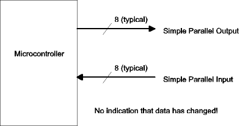
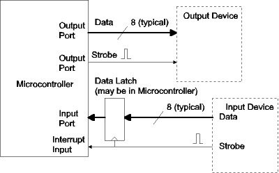
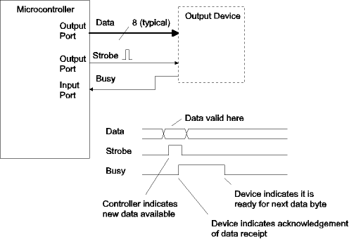
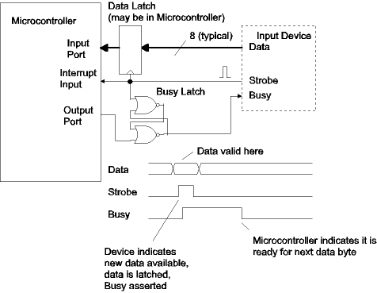
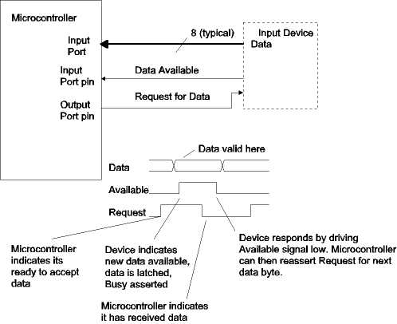
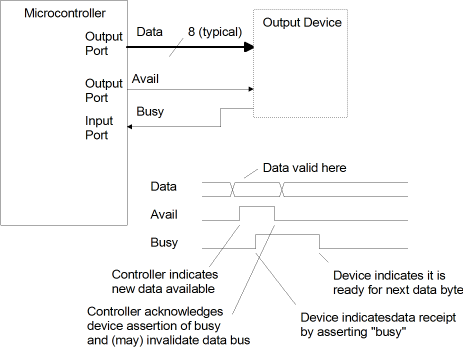
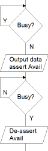
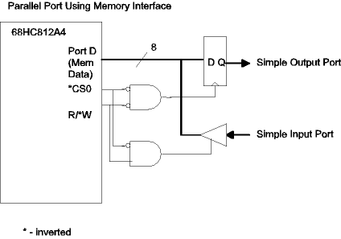

| Previous Section | Next Section | Index | Questions | Search the Text |
Parallel I/O is the transmission of binary data where several (typically 8) bits of data are transferred at the same time over separate wires. In the case of simple parallel output, the processor writes the data into a register (called an output port), and the data appears at the port pins. There is no indication that new data is available. Simple parallel output is suitable for driving basic components such as indicator lamps and relays. In the case of simple parallel input, the processor reads the data on the pins of an input port. No latching of data occurs, and there is no indication that data has changed. Simple parallel input is suitable for basic components such as DIP switches used for configuration.

More sophisticated devices require synchronization. Synchronization techniques notify the microcontroller when new data is at an input port and notify external devices when new data is at an output port. Synchronization takes two forms, strobes and handshaking.
In strobe synchronization, an additional control signal accompanies the data. In the case of an input strobe, the external device pulses the strobe control line when new data is present. A latch, either within or connected to the microcontroller captures the data, and typically asserts an interrupt. The microcontroller must read the data before the next input strobe occurs. In the case of an output strobe, the microcontroller generates a pulse on the strobe control line after it writes new data. The external device uses the strobe to capture the data being sent. The external device must be ready for new data the next time the strobe line is pulsed. In some cases the circuitry to generate the output strobe is built into the microcontroller. In other cases the strobe can be generated via software using another output port pin.

Handshaking synchronization solves the problem of data being sent before the receiving end is ready. A second (acknowledgment or busy) control line is used by the receiving device to signal the sending device that it is ready for the next data transmission. For handshaking with an output device, an extra input port pin is used to receive the busy indication from the external device. This input is polled and no new data is sent unless the pin is not asserted (not busy). A potential race condition exists if the microcontroller tests the busy bit before the output device asserts busy, however if busy is asserted automatically by the output device hardware, the microcontroller will not be able to test the bit quickly enough.

The figure below shows handshaking for an input device. The signals are the same but the roles of the microcontroller and external device are reversed. In this case a latch was added so that busy would be asserted immediately when data is received. The microcontroller pulses an output port pin to reset the busy latch when it is ready for the next data byte.

Potential race conditions can be avoided by employing full handshaking. Full handshaking uses both edges of the strobe and busy signals. The next figure shows the scheme for an input device. The microcontroller indicates to the device when it is ready for data. This is the inverse of the Busy signal we have seen before. The input device provides the data and indicates its availability by raising its strobe signal, Data Available. Unlike the preceding cases, the strobe signal is held high until the data recipient, the microcontroller, acknowledges receipt by lowering its request for data signal. The input device then knows that the data has been successfully received, removes the data, and waits for the next data request.

The MC9S12DP256B microcontroller has seven 8 bit ports, that can be used for simple parallel I/O if they aren't being used by their assigned peripheral modules. Since the part is rarely used with external memory, ports A and B are almost always available, but the others, T, S, M, P, and H are frequently available as well. On the Dragon12-Plus board, port B is used as a parallel output port for the LED display and port H is used as a parallel input port for the DIP switches. When used as an 8 bit parallel port, all eight pins of each port are programmed as input or output pins. The port direction can be changed at any time, allowing use as a bidirectional port or for driving three-state busses. The PTIX register (where X is the port name) is the data register used to read data of an input port, while the PTX register is the data register used to write data to an output port. When used as an output port, the value being driven to the port can be read by either reading the PTX register or the PTIX register, the latter actually reading the value on the microcontroller chip pads.
Strobe and handshaking signals can be implemented using additional general purpose I/O pins. The short registers such as J (4 bits) and K (7 bits) are particularly useful for this since they can't be used as byte wide parallel ports.
Most ports default at power-up to be input ports and some have pull-up resistors enabled so as not have any floating pins. A full description of the port control registers is in the previous section. The following example configures Port A for input and Port M for output and then continuously copies the data on Port A to Port M.
#include registers.inc ; symbolic definitions for all
; I/O registers
...
clr DDRA ; Set data direction registers
movb #$ff DDRM
clr RDRM ; no reduced drive on port M
bclr PUCR #1 ; no pull-ups on port A
l1: movb PORTA PTM ; Copy data from port A to port M
bra l1
Because the individual bits of the ports can be accessed independently, logical port sizes of down to a single bit can be supported. A single bit input port can be realized using the General Purpose I/O techniques of the preceding section. Shift and mask capabilities of the 68HC12 can be used to load and store values at ports of any size using the bit field techniques shown in the section on bitwise Boolean operations. For instance, consider the case where Port M is being used to drive two 3 bit devices and receive from a two bit device. Let's assign Port M pins 7 to 5 for output device A, pins 4 and 3 for input device B, and pins 2 through 0 for output device C. The direction register, DDRM would be initialized with the value $E7 (the binary value %11100111). We can read the value from input device B into accumulator A using the following code:
ldaa PTIM ; Read port M pins
lsra ; shift value right three bit positions
lsra ; placing bits 4 and 3 at positions 1 and 0.
lsra
anda #3 ; Mask off (zero) all but two least significant bits
To write the value in accumulator A to output device C requires taking care that the value of the upper 3 bits of Port M do not change.
ldab PTIM ; Read port M
andb #~7 ; force bottom three bits to zero
aba ; add upper 5 bits of port M to value for output device C
; which is in lower three bits of accumulator A
staa PTM ; Store new value of Port M, which has new value for device C
Finally, writing the value in accumulator A to output device A requires a shift to get the data into the leftmost bit positions.
ldab PTIM ; Read port M
andb #~$E0 ; force top three bits to zero
lsla ; Shift accumulator A left 5 bits, placing least significant
lsla ; three bits in the most significant position, matching
lsla ; the position of output device C pins in port M
lsla
lsla
aba ; Combine and store
staa PTM
The parallel ports in the 68HC12 do not have built-in handshaking or strobe capability. Handshakes or strobes must be implemented either with external hardware or with software. Since input device handshaking, and input strobes, are best handled with the interrupt system, an example will be given in External Interrupts -- IRQ and XIRQ . Output device handshaking can be done completely in software in most cases. Reviewing an earlier figure for output device handshaking, we have modified it for full handshaking, calling the former strobe signal Avail, which is now de-asserted only after the output device asserts Busy. In addition, the output device only de-asserts Busy if Avail is low.

We can use Port M for the 8 bits of output data, the MSB of port J for the Avail output, and the LSB of port J for the Busy input. First, the ports must be configured:
movb #$ff DDRM ; Set Port M for output
bset DDRJ #$80 ; Set only the MSB of port J for output
We use the bset instruction for setting port J because we don't want to disturb the bits that aren't being used for our output device driver.
When we want to output a byte of data, say the contents of accumulator A, we execute the following code:
l1: brset PTIJ #$1 l1 ; Keep executing this instruction until lsb
; of port J is 0 (device is not busy)
staa PTM ; Store new data in port M
bset PTJ #$80 ; Raise msb of port J
l2: brclr PTIJ #$1 l2 ; Keep asserting the strobe until
; device acknowledges data
bclr PTJ #$80 ; Lower msb of port J
External devices can also be interfaced to the 68HC12 memory bus. The 68HC812A4 microcontroller is designed for use with external memory and has four "chip select" signals which are for use in address decoding for peripheral devices rather than memory devices. Potentially hundreds of additional data registers can be accommodated. See External Memory/Peripheral Interfacing for details. The circuit below shows adding a simple parallel input port and separate parallel output port as chip select 0. For parts running in single chip mode, the external memory bus is not available.

Continue with System Clocks.
Return to the Index.